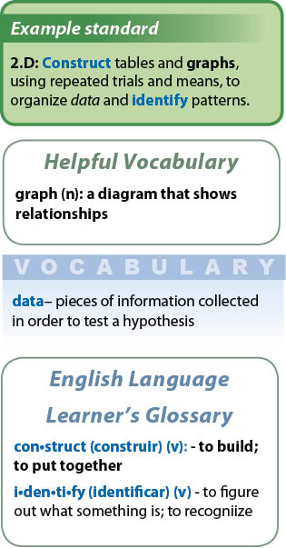
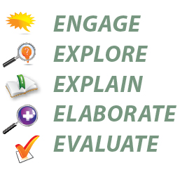
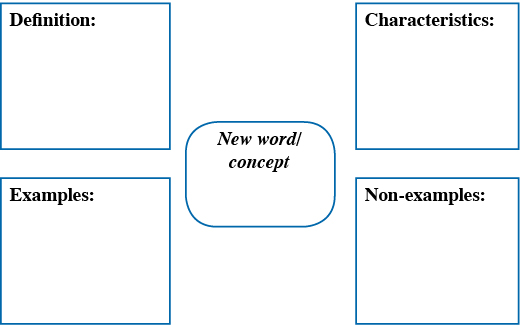
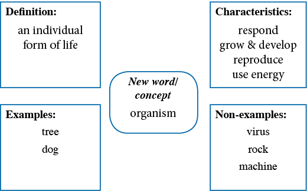
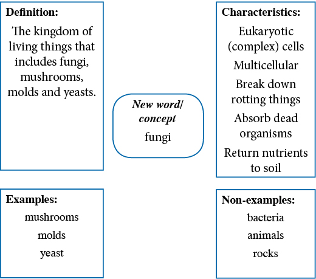

Click here for English Language Learner's Glossary
Teaching English Language Learners with CPO Science
While there are different philosophies and learning styles, teachers must first evaluate the ability of each English Language Learner (ELL). A sample ability chart is summarized here. It is important to recognize that not every strategy attempted will yield success, nor will progress always be immediate. Additional accommodations may be necessary.
A Suggested ELL Lesson Cycle
Chapter Introduction and Pretest
Each chapter begins with a short introduction, key questions, and an overview of three areas of focus: Read, Investigate, and Apply. This page helps English Language Learners understand the organization of the student materials. The teacher should specify which parts students should attempt. The chapter pretest can be read aloud and completed orally or modified by shortening phrases and reducing answer choices.
How to use the Study Guide
The two page Study Guide initiates interaction between teachers and peers. This guide is a cross curricular approach to linguistically accommodate English Language Learners. It bridges prior knowledge and experiences, scaffolds vocabulary, introduces teaching strategies and allows time for self-corrective techniques prior to introduction of grade level content. Teachers may team or group students by ability or with mentors. The Chapter Summary portion should be read aloud in class or in sheltered instruction. This provides opportunities for students to retell or summarize what they heard.
TEKS form the foundational language needed to read grade level content. In each Chapter Summary, basic vocabulary terms are reviewed in context in bold print. The Helpful Vocabulary section provides additional support for basic vocabulary. New academic terms appear first in italics in the Chapter Summary and are featured again later in each lesson in blue boxes. The English Language Learner’s Glossary contains high-frequency terms with Spanish cognates. During portions of the Chapter Summary, Guided Reading, and Let’s Review, the teacher should circulate to monitor both written and oral language production. Clarifying and confirming understanding with individual students is necessary prior to assessment.
Example Chart of ELL Abilities*
|
|
Level 1 |
Level 2 |
Level 3 |
Level 4 |
|
LEARNING |
• Has little or no experience with English language using basic or academic vocabulary • Uses drawings or pictures or gestures to convey meaning • Requests no verbal assistance, and employs no verbal or nonverbal cues |
• Has limited experience with English language using basic vocabulary • Uses drawings, and pictures and gestures to convey meaning • Requests little verbal assistance, reticent to employ verbal or nonverbal cues |
• Has some experience with English language using basic or academic vocabulary • Uses drawings, and pictures and gestures and some learned strategies to convey meaning • Readily requests verbal assistance using verbal or nonverbal cues |
• Has experience with English language using basic and academic vocabulary • Uses many learned strategies to convey meaning • Requires little verbal assistance |
|
LI5TENING |
• Understand no or only single word oral instructions • May points to stated pictures, words, or sort phrases according to oral instruction • May not request help, remain silent or watch others for verbal/nonverbal cues • Requires extensive linguistic support |
• Follows 2-4 step routine oral instructions • Locates, selects, orders information from simple oral instructions • Categorizes or sequences oral information using pictures, objects, short phrases • May require extended linguistic support and more time for processing. |
• Follows more detailed 2-4 step oral instructions • Compares/contrasts purpose or functions from oral instruction • Shows relationships between parts from oral instruction • Clarifies or summarizes oral instructions by retelling with linguistic support |
• Follows multi-step oral instruction and adjusts accordingly. • Analyzes, organizes and applies oral instruction • Demonstrates understanding of oral instructions • Requires little/no linguistic support |
|
SPEAKING |
• Uses little or no basic or academic vocabulary or uses non academic single words or short phrases or with frequent errors • Answers with memorized words or phrases with limited comprehension • Names objects, people, pictures • Does not respond readily to questions • Does not collaborate in speech with peers |
• Uses basic or academic vocabulary in short phrases or short sentences with poor pronunciation • Answers WW (who, what) questions • Restates facts • Responds to questions with some apprehension and better comprehension • Collaborates with peers usually in first language |
• Uses basic or academic vocabulary in longer sentences with fewer pronunciation errors • Answers WWWW (who, what, when, where) questions • Retells stories or events • Describes processes, procedures • Responds to questions with little apprehension • Some collaboration with peers in rudimentary English |
• Uses basic or academic vocabulary in sentences or discussions with occasional pronunciation errors • Answers WWWWH (who, what, when, where, how) and complex questions • Discusses stories, issues, or concepts • Offers creative solutions to issues, problems • Formulates hypotheses, make predictions • Readily collaborates with second language peers |
|
READING |
• Recognizes no or few routines in text or printed features. • Requires teachers to interpret small amounts of controlled content using high frequency words, gestures, pantomime, enunciation and slower speech |
• Matches icons and symbols to letters, words, phrases or environmental print • Identifies or recognizes routines in print and text features . • Requires peer or teacher support to interpret content at grade level |
• Classifies pictures, or sequences predictable events or processes • Identifies main ideas with visual or linguistic clues • Uses context clues to determine meaning of words or understands grade appropriate words • Requires some peer or teacher support to read content at grade level |
• Interprets information or data from text or print routines • Finds details that support main ideas • Identifies word derivations, figures of speech • Requires limited peer or teacher support to read content at grade level |
|
WRITING |
• Produces icons, symbols, letters, words, or short phrases to convey messages • Labels objects, pictures, diagrams with errors • Copies forms of writing such as letters and words, but unable to generate own original writing responses. |
• Labels objects, pictures, diagrams with accuracy • Produces drawings, phrases, short sentences, and limited notes • Limited ability to write grammatically correct sentences. • Creates little or no original writing featuring description or detail. |
• Compares/contrasts information • Describes events, people, processes, procedures in sentences or short notes • Demonstrates some knowledge of grade level writing • Creates redundant narratives, and details and descriptions emerge slowly |
• Writes requested information from oral or written directions • Edits and revises writing • Summarizes information from graphics or notes • Creates original ideas or detailed responses with some difficulty in phrasing or expression |
* This example is CPO Science’s interpretation of ELL ability levels.
5E model and English Language Learners
Engage, found in the Teacher’s Guide, builds on the student’s prior experiences. Explore helps English Language Learners find success using labeled images of materials and learn new essential language while completing investigations. The role of the teacher as a facilitator includes a master dialog that permits gathering opinions, soliciting ideas, and seeking clarification. Direct instruction occurs during the Explain step. The student text layout with three columns, main idea sidebars and “one topic per page” resembles a dynamic webpage. This layout accommodates readers and supports note taking at all ability levels. Elaborate and Evaluate are opportunities to extend and assess English Language Learners drawings, concepts maps, tables, graphs, and writings completed in a variety classroom activities throughout the program. Additional recommended teaching strategies appear below.
Teaching English Language Learners
ELLs bring rich diversity of experience, knowledge, and culture to the science classroom. It is common to mistake challenges in communication for academic limitation. Science, in particular, is a subject area where these students can demonstrate their skill, creativity, and intelligence. Some ELLs have strong math skills which enable them to excel in science investigations and calculations. Others may have had experience with the scientific method in their former schooling. Some may come from countries that are renowned for their advances in science. Others will simply have an innate curiosity that makes them excellent observers. These students may not be able to express all that they know and want to know in English words, but the science classroom gives them an opportunity to explore, demonstrate, experiment, draw, and record their prior knowledge as well as new learning.
English Language Learners in the Science Classroom
It is common to think that content classes such as science are less important than English language classes to English Language Learners. On the contrary, they have a unique role to play in the English language development of these students. Content classes teach students not only the academic knowledge they need, but important academic language and culture. ELLs may not get this experience and vocabulary anywhere else, yet they must acquire it if they are to succeed.
Researchers advocate the integration of content and language instruction. The cognitive processes used in scientific inquiry closely resemble the cognitive processes used in language. It may also enable students to acquire language at a faster rate. Science class is an opportunity for these students to learn about science, and provides a rich context for students to advance in their knowledge and use of English.
Instructional Strategies
The following sections present several instructional strategies to enhance learning by English Language Learners in the science classroom. For each strategy there is a brief description of the strategy and an example. For ease of use they have been divided into three approaches: feedback, content, and vocabulary.
Feedback strategies are employed routinely to prevent students from feeling embarrassed about their inability to understand content or concepts. ELLs rarely inform teachers when they do not understand with regularity or with any specificity. Teachers should be prepared with several routines for checking for understanding and positive reinforcement for both verbal and non-verbal communication.
Feedback Strategies:
THC Chart
Note Cards
Summary Paragraphs
Learning Logs
Exit Ticket
Vocabulary Strategies:
Word choice
Look/Spell/Say/Write
Vocabulary Cards
Vocabulary Dictionary
Vocabulary Charts
Spanish Cognates in ELL Glossary
Puzzles/Games
Content Strategies:
Anticipatory Guide
Cloze Procedure
Frayer Model Word and Concept Maps
Jigsaw
Collaborative Graphing
Using Realia
Kinesthetic Activity
Picture This
Pairs Check
Feedback Strategy: Note Cards
Give students index cards or duplicated forms that include beginning phrases:
- “ I need help with…”
- “ I still don’t understand…”
- “I need to practice…”
- “Today I learned…”
- “My favorite part of today’s lesson was…”
- “The BIG idea in science I learned about was…”
Discuss with students an appropriate time and place to return the forms. Teachers should evaluate them as quickly as possible and return forms with explanations, comments, suggestions, or additional short assignments.
Feedback Strategy: Summary Paragraphs
Use the chapter introduction or other short paragraph summaries to create worksheets with blanks for students to fill in at the end of the class or week. Evaluate their comprehension of the lesson and use this to guide additional practice or document progress.
Example Strategy
about a topic grows as more experiments are done by different people. Scientific laws and theories are statements that are supported by the and from these experiments. describe, but do not explain, observed phenomena. An example of a scientific law is the law of gravity. address more complex ideas. An example of a scientific theory is the theory of plate tectonics. Even accepted scientific laws and theories are constantly tested by new experiments.
Answers: Knowledge about a topic grows as more experiments are done by different people. Scientific laws and theories are statements that are supported by the observations and evidence from these experiments. Scientific laws describe, but do not explain, observed phenomena. An example of a scientific law is the law of gravity. Scientific theories address more complex ideas. An example of a scientific theory is the theory of plate tectonics. Even accepted scientific laws and theories are constantly tested by new experiments.
Feedback Strategy: Learning Logs
This strategy enables students to not only record new learning, but it also allows them to observe their own learning process. This type of note-taking teaches students how to monitor their own comprehension as they learn new material. A learning log is a double-entry journal. It is a simple T-chart. On the left side, students record notes from a reading or listening assignment. The notes can be in outline or summary form. On the right side, students record what they have learned. The loose format of this learning log allows students to respond in a variety of ways, according to their ability and preference. To begin, students can respond simply, with either a paraphrase or sketch. Later, as students progress in language skills and content knowledge, they can begin to use higher-level thinking skills to respond in more complex ways. Responses can predict, explain, draw conclusions, agree or disagree, and connect to personal experience or previous knowledge.
Observations
Author/BookTitle/Topic
|
Notes |
What I Learned |
|
|
|
Example Strategy
|
Notes |
What I learned |
|
Observations can be qualitative or quantitative.
Observations are different from inferences. |
A qualitative observation of an insect is describing its color or smell. A quantitative observation of an insect is counting its parts or measuring length. |
Feedback Strategy: Exit Ticket
Use note cards or small notebooks for students to summarize one or two basic concepts from each lesson, or with an open-ended approach. They turn in these cards as they leave class.
Example Strategy
- One example of a variable in the car and ramp system is .
- One thing I learned today was .
Collect the cards as students exit the classroom. These “exit cards” give students an opportunity to reflect on what they learned in the investigation and they give information to the teacher that is useful for reteaching and assessment. As students make progress, request longer, more-specific answers or increase the number of note cards required to “exit.”
Basic Vocabulary Strategy: Look, Spell, Say/Cover/Look Again
Choose appropriate vocabulary from the chapter. Limit the number of syllables or words based on ability. Students divide the paper equally and fold the paper vertically in half. Students complete the first three columns of chart, with a partner or with supervision, then cover their work and repeat the next three columns, checking their work by uncovering the correct answer.
|
Copy Word |
Copy & |
Say Word |
Write Word |
Write Word |
Write Word |
|||
|
|
|
|
|
|
|
|
|
|
Vocabulary Strategy: Vocabulary Cards
Choose appropriate vocabulary from the chapter. Increase or decrease number of terms for the ability level. Bear in mind that you will need to limit quantities of words so English Language Learners do not become lost in the vocabulary.
Students should make one card for each new vocabulary word. On one side of the card, students write the word and its definition in their own words. If students are literate in their first language, allow them to use a high-quality bilingual dictionary to write the dictionary translation of the word. On the opposite side of the card, the students write a sentence using the word or draw an illustration that shows the word’s meaning. In addition, whenever possible, have the students find a graphic in the text that illustrates this word and note the page number.
Vocabulary Strategy: Word Charts
As an alternative to index cards, students can create an entire chart of new vocabulary terms by chapter or reading. The format of the chart can vary by ability.
Basic
|
Words |
Drawings |
Page numbers |
|
|
|
|
Intermediate
|
Words |
Drawings |
Definitions |
|
|
|
|
Advanced/Advanced High
|
Words |
Definitions |
Sentences |
|
|
|
|

Vocabulary Strategy: Vocabulary Dictionary
Rather than using cards, ask the students to keep a vocabulary notebook or dictionary. This works well with a loose-leaf binder, using alphabetically tabbed dividers. Students include the same information as noted on the vocabulary cards, but simply record it on a sheet of loose-leaf paper. The students continue to add terms to the notebook through the entire school year. Students can use the dictionaries during assessments.
Vocabulary Strategy: Connect Spanish Cognates and ELL Glossary
When students in the classroom speak Spanish as their first language, teachers and students may refer to the CPO ELL glossary to find words in English that have similar pronunciations and meanings to use as starting points for discussions.
|
English |
Spanish cognate |
|
classify |
clasificar |
|
compare and contrast |
comparar y contrastar |
|
data |
datos |
|
graph |
gráfica |
Note: Some scientific terms are known to English Language Learners only by their non-technical use. Examples of these words are energy, work, speed, table, and sense. You may find that you need to clarify the scientific meanings of these words and be certain that your students understand and use them correctly.
Vocabulary Strategy: Puzzles and Games
The use of word search and crossword puzzles can be valuable ways for students to learn new word spellings and definitions. Students can create their own puzzles or go online to find puzzle makers for lists of science, academic, or basic words. Basic-level, intermediate-level, and advanced-level readers may vary greatly in the number of words they can apply.
Example word games include hangman, word relay races, word scrambles, word jumbles, cryptograms, and charades.
Content Strategy: Anticipatory Guide
This reading strategy helps students to find, interpret and apply information in a given text. The guide consists of statements related to the reading content. Prior to reading, students predict whether statements are true or false. After reading, students check their answers against the information in the text.
Prepare an anticipatory guide for a reading or passage. Divide the guide into three levels: literal, interpretative, and applied. At the basic level, statements can be proved or disproved directly by reading the material. The intermediate-level students must prove or disprove the statements by interpreting the text to figure out what is implied. The advanced level requires students to apply what is learned to other contexts.
Explain to students that they will first guess whether the statements on the guide are true or false. Reassure them that there are no right or wrong answers at this point. Allow them time to make predictions. During or after reading, students determine whether the statements are true or false, as well as how they know. For example, they must find the place in the text that proves or disproves a statement.
Example Strategy:
|
Before Reading True or False |
Level One: What does the writer say? |
After Reading True or False |
How do I know that? |
|
T/F |
Quantitative observations use a number or measurement to describe something. |
T |
Page #, paragraph #, or fig. # Ex. TX6 p5, para #1 |
|
Before Reading True or False |
Level Two: What does the writer mean? |
After Reading True or False |
How do I know that? |
|
T/F |
If you record the amount of soda in a can as 12 oz., you are making a qualitative observation. |
F |
Qualitative observations use senses and description, and do not include measurements or numbers. |
|
Before Reading True or False |
Level Three: What can you conclude or apply after reading? |
After Reading True or False |
How do I know that? |
|
T/F |
A scientist records only one type of observation when following the scientific method. |
F |
The scientific method is a process by which data is collected to provide evidence to supports or reject a hypothesis. Many observations will be needed and they depends on the type of experiment. |
Content Strategy: CLOZE Procedure
In this technique, words are deleted from a reading passage. The passage is presented to students, who insert words as they read to complete and construct meaning and reinforce vocabulary usage from the text. This procedure has been modified in each CPO Study Guide at the beginning of each chapter for ELLs by providing two possible word choices. The students can copy the questions and answers from the student text, or the teacher can provide students with electronic or paper copies of the Chapter Summary Guided Reading handouts which appear as Teacher Resources. In addition, a Guided Reading handout with blanks and a template with a fillable, digital form is provided for each part of the chapter.
Example Strategy
Study Guide Chapter Summary
- Speed equals distance (times/divided by) time.
Guided Reading Worksheet for each Lesson
- Speed describes how quickly something moves and equals distance by time.
Guided Reading Digital Form
- Speed describes how quickly something moves and equals distance by time.
Content Strategy: THC Chart (An adaptation of the KWL)
Many educators are familiar with the K-W-L chart, which records what students Know, Want to know, and what they have Learned about a topic. An adaptation of this strategy for science is the THC strategy (Crowther and Cannon, 2004). It asks three questions about a topic of study: what do I think, how am I going to find out, and what do I conclude? This strategy is one way to guide students to think scientifically, as well as to access prior knowledge and reflect on what they learn. Students fill out columns T and H before listening to a presentation, reading a text or participating in another type of learning activity. Once finished, they fill out column C.
|
T |
H |
C |
|
I Think
|
How am I going to find out?
|
I conclude
|
|
|
|
|
Example Strategy
|
T |
H |
C |
|
What I Think |
How am I going to find out |
I conclude |
|
In my last science class, only the teacher could touch the science tools. I once used a science tool when I looked in a microscope. |
I am going to look at the pictures in my textbook. I am going to use science tools from the investigation manual. |
My brain is the most important science tool. The CPO DataCollector has a stopwatch built in. |
Content Strategy: Jigsaw (also known as “Expert Groups”)
This learning strategy employs collaborative groups. Students to become “experts” on a small part of the material, then teach it to their classmates. A group of 4-6 students can be identified as their “home” team. Within each home team, the students count off, 1-4, for example. Next, “expert” groups are formed according to these numbers (all “ones” form a new group). Each expert group is assigned a portion of text to read or an activity to do. Once the students have mastered the new material, the experts return to their home groups to report and record what they learned.
Example Strategy
Tell the class that each new group is going to become experts on animal cell parts. Ask each expert group to read the pages of the text that describe the parts of the animal cell and divide the study of the parts to different experts. Experts will report three things to their home groups:
- What is it called? (Name of cell part.)
- Where is it? (Location of cell part on the schematic drawing.)
- What does it do? (The function of that particular cell part.)
Once the groups have identified and studied their cell part(s), they are sent back to their home groups. Each “expert” teaches their home group the information they learned, helping the other members of the group to label the part(s) on a drawing and to understand the function of that part(s) of the cell. Repeat the same activity for the plant cell diagram or other diagrams in the text.
Content Strategy: Frayer Model Concept Map (A Graphic Organizer)
The Frayer model is a concept map developed by Dr. Dorothy A. Frayer to help students analyze and internalize new vocabulary. Using a four-quadrant chart, students record a definition, characteristics, examples, and non-examples of a new word.
Completing the chart guides students through an analysis of the new concept. First, they must write its definition in their own words. Next, they list characteristics of this concept in the upper right quadrant. Then, they apply this information to examples and non-examples. This thought process helps students to relate the concept to prior knowledge and to understand both what the concept is, as well as what it is not.
The Frayer Model

Example Strategy:
The Frayer Model for a Word: Organism

The Frayer Model for a Concept: Kingdom Fungi

*Additional templates for Word Maps and Concept Maps appear as digital Teacher Resources in .doc or .ppt format.
Content Strategy: Collaborative Graphing
When ELLs work collaboratively in a group on an assigned task, it provides a non-threatening environment where the English language can be modeled and used for authentic communication. This strategy also provides scaffolding support for learning to collect data and create bar or line graphs. Students work in small groups to collect data, develop a graph, and finally to present their results to the class. Groups collect their data, construct their graph, and then present it to the rest of the class.
Example Strategy

Reporting:
Every group member describes their part of the graph to the class.
Content Strategy: Using Realia
The term realia refers to real objects and materials used in a lesson. The use of realia provides a richer context for language learning than talk alone. Students can attach the new words they are hearing to real life objects, making it not only easier for them to understand, but also to remember the new vocabulary.
Example Strategy
“Density of common materials.” Read aloud passages in the text, stopping frequently to demonstrate the concepts with real objects. For example, after you read the paragraph, which explains that the density of liquids is less because their atoms are not packed as uniformly, take out a box of toy blocks. Demonstrate for students how the blocks will not fit back into the box unless packed in a uniform pattern. Continue through the reading or as much of the chapter as you wish, using the realia to support student comprehension.
Content Strategy: Kinesthetic Activity
For students who learn best through tactile/kinesthetic activities, it is ideal to get them up out of their seats and moving around the room during a lesson. ELLs also benefit from a physical aspect in the learning process. Not only does it wake students up, it can help them to understand and internalize new language and concepts. Try to use activities such as this one frequently in your science classroom
Example Strategy
Explain to students that they are going to act as atoms, differentiating between the three common phases of matter.
To simulate a solid: The entire class of students stands in rows (for example 5 rows of 5 students) close together, to form a grid-like pattern. Ask all the students to link arms at the elbows, making certain that every student is linked to two other students and there are no “loose ends.” Talk to the students about how this is similar to atoms in a solid, which are bound firmly together.
To simulate a liquid: The class stands in rows as before. This time, the students should link elbows until your signal. At your signal, students change places, similar to a folk dance move where one person lets the arm of their partner go and takes that of another person. To avoid confusion, ask each student to change partners to their right, or behind them if they are at the end of a row. They may temporarily break with their neighbors, but not permanently. Ask the students to continue to move in this way and as they do so, explain that the atoms in a liquid have enough energy to temporarily break the attachment with their neighbors.
To simulate a gas: The students spread around the room, to any place they choose. They continue to move and separate from one another. Encourage them to use all the space of the classroom. Explain that just as they filling up the room, atoms in a gas completely separate from one another and that a gas will expand to fill its container. When you are finished with this activity, refer to a figure of atoms in a solid, liquid, and gas. Have students draw their illustration of the atoms in different phases of matter in a science notebook.
Content Strategy: Picture This
This is a versatile strategy that can be used to reinforce or review material. Students divide a blank sheet of paper into sections, and then draw pictures to depict different concepts or vocabulary words. Students exchange papers with a partner and attempt to label the other’s drawings correctly. Partners discuss their results and make corrections to their drawings or labels as needed.
Example Strategy 1:
Give each student a blank piece of paper. Students fold the paper into eight equal sections. Students draw representations of the following natural energy resources: Sun, wind, moving water, Earth’s internal heat, tides, coal/oil/natural gas, nuclear power, and biomass fuel. Students do not label their own drawings, but switch papers with a partner. The partner tries to correctly label the drawings.
Example Strategy 2:
Try this strategy with steps in the cell cycle and the photographs of actual cells. Students divide the blank paper into six sections and draw representations of these concepts: interphase, prophase, metaphase, anaphase, telophase, and cytokinesis.
Content Strategy: Pairs Check
Students work collaboratively in pairs to review a topic. Practice questions are provided. One student answers a question while the other student acts as coach. Once the question is completed to the coach’s satisfaction, the students switch roles and continue with the other questions. Later, this pair can compare their completed work with another pair. The pairs work together until they agree on all the answers to the questions. If they are unable to agree, they consult another pair or the teacher for further assistance.
Example Strategy
How is an ecosystem different from a habitat?
|
Ecosystem |
Habitat |
|
Define:
Examples: (write or draw your answer) |
Define:
Examples: (write or draw your answer) |
Bibliography
Academic vocabulary for fifth to seventh grade English language learners. The Meadows Center for Preventing Educational Risk. 2010. Retrieved from: http://www.elltx.org/docs/AcademicVocabulary.pdf
Brown, C.L. 2004. ELLs: Children left behind in science class. Academic Exchange Quarterly. 8(3):152-56.
Clinton Community School District ELL Handbook. 2010. Retrieved from: www.clinton.k12.ia.us/assets/files/E/ELLHandbook20102011.doc
Chamot, A.U., and O’Malley, J. M. 1994. The CALLA Handbook:
Implementing the Cognitive Academic Language Learning Approach. Addison-Wesley Publishing Company, Inc.
Crowther, D. and J. Cannon.2004. Strategy makeover: From KWL to THC: A popular reading strategy gets a science makeover. Science and Children 42(1): 42-44.
ELPS and TELPAS- Proficiency Level Descriptors. (14 April 2011). Texas Education Agency. Retrieved from: http://www.tea.state.tx.us/student.assessment/ell/telpas/
Fathman, A.K., and Crowther, D.T., editors. 2006. Science for English Language Learners: K-12 Classroom Strategies. Arlington, VA: NSTA Press.
Hill, J., Little, C., and Sims, J. 2004. Integrating English Language Learners in the Science Classroom. Markham, Ontario, Canada: Trifolium Books, Inc.
Lindstromberg, S., editor. 1997. The Standby Book: Activities for the Language Classroom. Cambridge, United Kingdom: Cambridge University Press.
Tonjes, M.J., and Zintz, M.V. 1992. Teaching Reading Thinking Study Skills. Dubuque, IA: Wm. C. Brown Publishers.